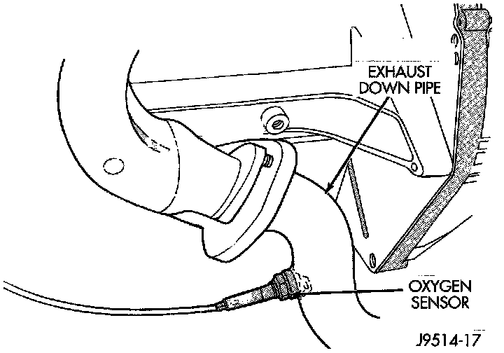
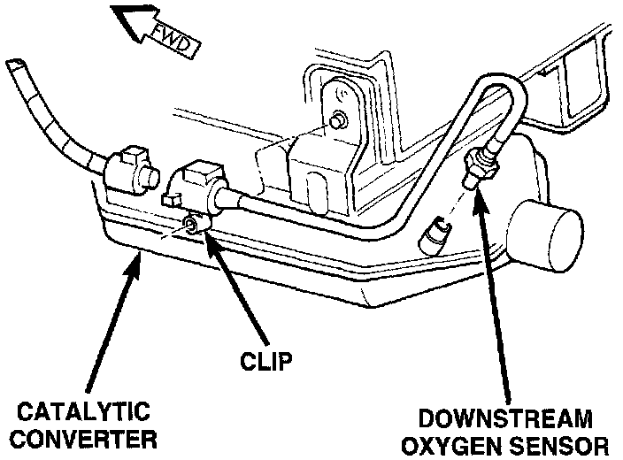

Component Testing
OXYGEN (O2S) SENSORSTo perform a complete test of the O2S sensors and their circuitry, refer Powertrain Management/Computers and Control Systems/Testing and Inspection.
Testing and Inspection
To test the O2S sensors only, refer to the following:
Fig. 54 Upstream O2S:

The upstream O2S sensor is located on the exhaust pipe (Fig. 54).
Fig. 53 Downstream O2S:

The downstream O2S sensor is located on the outlet end of the catalytic converter (Fig. 53).
Each O2S heating element can be tested with an ohmmeter as follows:
Disconnect the 02S sensor connector. Connect the ohmmeter test leads across the white wire terminals of the sensor connector. Resistance should be between 4.5 +/- 0.5 ohms and 7 ohms. Replace the sensor if the ohmmeter displays an infinity (open) reading.